P - p
pɑl पाल N सं. canoe; the dongi; एक प्रकार की नाव, डोंगी. SD: boat related, नाव सम्बंधी, hunting & gathering, शिकार एवं संचय सम्बंधी.
|
 pʰɑl फाल VAR: pʰɑːl फाऽल; pʰɑβ फाब. N सं. big sea wave; विशाल समुद्री लहर. SD: natural environment, प्राकृतिक वातावरण.
pʰɑl फाल VAR: pʰɑːl फाऽल; pʰɑβ फाब. N सं. big sea wave; विशाल समुद्री लहर. SD: natural environment, प्राकृतिक वातावरण.
pɑlɑ पाला N सं. stream; लहर. SD: natural environment, प्राकृतिक वातावरण.
 |
pʰɑlɖuo फाल्डूओ MORPH: pʰɑl-ɖuo. VAR: pʰɑl-duo फाल-दूओ; pʰɑlʷɖuo फालव्डूओ; pʰɑːl-ɖuo फाऽल डूओ. N सं. high tide; huge wave; ज्वार; विशाल लहर. SD: natural environment, प्राकृतिक वातावरण. NT: This is called ‘halpha’ in the local language. अण्डमानी हिन्दी में इसे ‘हल्फ़ा’ कहते हैं।.
pʰɑltɑmur फालतामूर MORPH: pʰɑl-tɑmur. N सं. foam or bubbles, of waves; लहरों का झाग या बुलबुले. SD: natural environment, प्राकृतिक वातावरण.
pʰɑr फार Etym: Khora; खोरा. N सं. injury/ wound; चोट/ घाव. SD: illness, रोग.
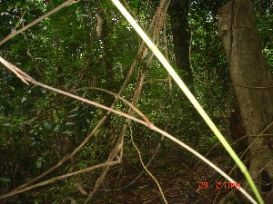 |
 pʰɑrɑko1 फाराको VAR: ɸɑrɑko फाराको; fɑrɑko फाराको; fɑːrɑːkkɔ फाऽराऽककौ. N सं. plant, from which bowstring is made; a kind of creeper; पौधा, जिससे धनुष की डोर बनायी जाती है; एक प्रकार की बेल. SD: flora, फूल-पत्ती. NT: Commonly used in daily life. Pregnant women are not supposed to go near it. रोज़मर्रा की ज़िंदगी में काम आने वाली बेल। गर्भवती महिला इस बेल के पास नहीं जाती क्योंकि ऐसा माना जाता है कि इसकी परछाईं से गर्भपात हो जाता है।. SEE: pʰɑrɑko2 ‘rope’ ‘रस्सी फाराकोhm:{2}’; pʰɑrɑko3 ‘thread’ ‘धागा फाराकोhm:{3}’.
pʰɑrɑko1 फाराको VAR: ɸɑrɑko फाराको; fɑrɑko फाराको; fɑːrɑːkkɔ फाऽराऽककौ. N सं. plant, from which bowstring is made; a kind of creeper; पौधा, जिससे धनुष की डोर बनायी जाती है; एक प्रकार की बेल. SD: flora, फूल-पत्ती. NT: Commonly used in daily life. Pregnant women are not supposed to go near it. रोज़मर्रा की ज़िंदगी में काम आने वाली बेल। गर्भवती महिला इस बेल के पास नहीं जाती क्योंकि ऐसा माना जाता है कि इसकी परछाईं से गर्भपात हो जाता है।. SEE: pʰɑrɑko2 ‘rope’ ‘रस्सी फाराकोhm:{2}’; pʰɑrɑko3 ‘thread’ ‘धागा फाराकोhm:{3}’.
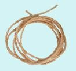 |
 pʰɑrɑko2 फाराको VAR: ɸɑrɑko फाराको. N सं. rope; रस्सी. SD: household, घरेलू. NT: Made from the bark of the Pharako tree. यह रस्सी फाराको बेल से बनाई जाती है।. SEE: pʰɑrɑko1 ‘plant; creeper’ ‘पौधा; बेल फाराकोhm:{1}’; pʰɑrɑko3 ‘thread’ ‘धागा फाराकोhm:{3}’.
pʰɑrɑko2 फाराको VAR: ɸɑrɑko फाराको. N सं. rope; रस्सी. SD: household, घरेलू. NT: Made from the bark of the Pharako tree. यह रस्सी फाराको बेल से बनाई जाती है।. SEE: pʰɑrɑko1 ‘plant; creeper’ ‘पौधा; बेल फाराकोhm:{1}’; pʰɑrɑko3 ‘thread’ ‘धागा फाराकोhm:{3}’.
 pʰɑrɑko3 फाराको VAR: ɸɑrɑko फाराको. N सं. thread used for tying arrows; तीर बांधनेवाली डोर. SD: flora, फूल-पत्ती. SEE: pʰɑrɑko1 ‘plant; creeper’ ‘पौधा; बेल फाराकोhm:{1}’; pʰɑrɑko2 ‘rope’ ‘रस्सी फाराकोhm:{2}’.
pʰɑrɑko3 फाराको VAR: ɸɑrɑko फाराको. N सं. thread used for tying arrows; तीर बांधनेवाली डोर. SD: flora, फूल-पत्ती. SEE: pʰɑrɑko1 ‘plant; creeper’ ‘पौधा; बेल फाराकोhm:{1}’; pʰɑrɑko2 ‘rope’ ‘रस्सी फाराकोhm:{2}’.
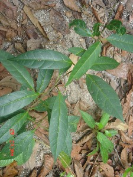 |
pʰɑrɑkotɛc फाराकोतैच MORPH: pʰɑrɑko-tɛc. N सं. pharako leaves; फाराको पेड़ का पत्ता. SD: flora, फूल-पत्ती.
pʰɑrɑŋoɑt फाराङोआत MORPH: pʰɑrɑŋo-ɑt. N सं. wood of pharango tree; फाराङो पेड़ की लकड़ी. SD: flora, फूल-पत्ती. NT: Used as a firewood; this wood burns for a long time. इसकी लकड़ी देर तक जलती है। अतः ईंधन के काम आती है।.
 pʰɑrɑŋɔ1 फाराङौ N सं. firewood tree; ईंधन के काम में आने वाला पेड़. SD: natural environment, प्राकृतिक वातावरण. SEE: pʰɑrɑŋɔ2 ‘fish’ ‘मछली फाराङौhm:{2}’.
pʰɑrɑŋɔ1 फाराङौ N सं. firewood tree; ईंधन के काम में आने वाला पेड़. SD: natural environment, प्राकृतिक वातावरण. SEE: pʰɑrɑŋɔ2 ‘fish’ ‘मछली फाराङौhm:{2}’.
pʰɑrɑŋɔ2 फाराङौ N सं. Grouper fish (small); एक प्रकार की छोटी मछली. SD: fish, मछली. SEE: pʰɑrɑŋɔ1 ‘firewood tree’ ‘पेड़, जो ईंधन के काम आता है फाराङौhm:{1}’.
pʰɑrɑʈoʈmo फाराटोटमो N सं. a kind of fish; Dingra fish; एक प्रकार की मछली, दींगरा मछली. SD: fish, मछली.
pɑrepɑ पारेपा Etym: Bea; बेया. N सं. mat; चटाई. SD: household, घरेलू.
pʰɑro फारो N सं. colour; रंग. SD: natural environment, प्राकृतिक वातावरण.
pɑrpʰɑʈ पारफाट V क्रि. twinkle; झिलमिलाना/ टिमटिमाना.
pʰɑrtɑjido1 फारताजीदो MORPH: pʰɑr-tɑ-jido. VAR: pʰɛrtɑ-jido फैरताजीदो; pʰɛrtɑːjiɖo फैरताऽजीडो. N सं. born out of a bamboo; first man; बांस से पैदा हुआ; पहला आदमी. SD: mythology, पौराणिक. NT: A mythological figure known to be the first human being of Andaman. मिथक व्यक्ति जो अण्डमानी आदिमानव माना जाता है।. SEE: pʰɑrtɑjido2 ‘story of evolution’ ‘कहानी, क्रमविकास की फारताजीदोhm:{2}’.
pʰɑrtɑjido2 फारताजीदो MORPH: pʰɑr-tɑ-jido. VAR: pʰɛrtɑ-jido फैरताजीदो; pʰɛrtɑːjiɖo फैरताऽजीडो. N सं. story of evolution; कहानी (क्रमविकास की). SD: mythology, पौराणिक. SEE: pʰɑrtɑjido1 ‘born out of a bamboo; first man’ ‘बांस से पैदा हुआ; पहला आदमी फारताजीदोhm:{1}’.
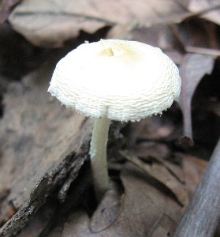 |
 pɑtɑ पाता Etym: North Andaman; उत्तरी अण्डमान. N सं. edible grub; mushroom found on the Gurjan tree; गस्सा; कुकुरमुत्ता. SD: flora, फूल-पत्ती.
pɑtɑ पाता Etym: North Andaman; उत्तरी अण्डमान. N सं. edible grub; mushroom found on the Gurjan tree; गस्सा; कुकुरमुत्ता. SD: flora, फूल-पत्ती.
 pʰɑtɑ फाता N सं. insect larva; कीड़े का अंडा. SD: insect & invertebrate, कीट-पतंग एवं अरीढ़ जीव. NT: It is white and edible and very nutritious. One is enough for a whole day’s nutrition. सफ़ेद रंग के कीड़े का खाद्य लारवा जो खाने में पौष्टिक माना जाता है। पूरे दिन के पोषण के लिए एक लारवा ही बहुत है।.
pʰɑtɑ फाता N सं. insect larva; कीड़े का अंडा. SD: insect & invertebrate, कीट-पतंग एवं अरीढ़ जीव. NT: It is white and edible and very nutritious. One is enough for a whole day’s nutrition. सफ़ेद रंग के कीड़े का खाद्य लारवा जो खाने में पौष्टिक माना जाता है। पूरे दिन के पोषण के लिए एक लारवा ही बहुत है।.
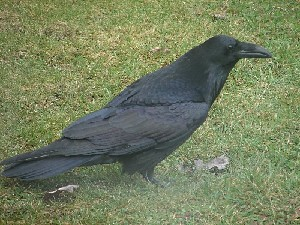 |
 pʰɑʈkɑ फाटका VAR: fɑʈkɑ फाटका. N सं. crow; कौआ. SD: bird, पक्षी.
pʰɑʈkɑ फाटका VAR: fɑʈkɑ फाटका. N सं. crow; कौआ. SD: bird, पक्षी.
pebeŋɑrɑ पेबेङारा MORPH: pebeŋ-ɑrɑ. N सं. canal; नाला. SD: natural environment, प्राकृतिक वातावरण.
pec पेच N सं. pot; बर्तन. SD: household, घरेलू.
pʰecɑr1 फेचार N सं. one who has everything; सर्वसंपन्न. SD: people, लोग. SEE: pʰecɑr2 ‘something kept for a long time’ ‘वस्तु, काफी समय तक रखी हुई फेचारhm:{2}’.
pʰecɑr2 फेचार Etym: Khora; Sare; खोरा; सारे. N सं. something kept for a long time; जो काफी समय तक रखा या रखी हो. SD: household, घरेलू. SEE: pʰecɑr1 ‘one who has everything’ ‘सर्वसंपन्न फेचारhm:{1}’.
pʰecer फेचेर N सं. the one who keeps everything carefully; जो सब सम्भाल कर रखता है. SD: people, लोग.
peco पेचो N सं. sharp sword; तेज़ तलवार. SD: hunting & gathering, शिकार एवं संचय सम्बंधी.
 pʰecɔ फेचौ VAR: pʰicco फीच्चो. N सं. Shankar fish; शंकर मछली. SD: fish, मछली.
pʰecɔ फेचौ VAR: pʰicco फीच्चो. N सं. Shankar fish; शंकर मछली. SD: fish, मछली.
pʰelɑm1 फेलाम ADJ वि. aimless; unemployed; दिशाहीन; बेकार. SD: attribute, विशेषता. SEE: pʰelɑm2 ‘unemployed’ ‘बेकार फेलामhm:{2}’.
pʰelɑm2 फेलाम N सं. unemployed; बेकार. SD: attribute, विशेषता, people, लोग. SEE: pʰelɑm1 ‘aimless; unemployed’ ‘बेकार फेलामhm:{1}’.
pʰeno फेनो VAR: peno पेनो. N सं. a variety of Manta ray; एक प्रकार की शंकर मछली. SD: fish, मछली. NT: The tail of this fish has a stinger on it. इस मछली की पूंछ में कांटा होता है।.
pʰeoɛ फेओऐ N सं. movement, of a turtle in water; पानी में कछुए की चाल. SD: activity & event, कार्यकलाप.
pʰerecom फेरेचोम MORPH: pʰere-com. V क्रि. fight; bite; लड़ाई करना; काटना.
perɛːʈ पेरैऽट N सं. a kind of ant; एक प्रकार की चींटी. SD: insect & invertebrate, कीट-पतंग एवं अरीढ़ जीव.
pʰeterɔ फेतेरौ VAR: feːttɑrɔ फेऽत्तारौ. DEIXIS डीक्सीस. by the side of; किनारे पर. ʈʰot ŋo pʰeterɔ-l lokɑ-t ɲo be ठोत ङो फेतेरौल लोकात ञो बे. Loka’s house is next to my house. मेरे घर के बराबर में लोका का घर है।. SD: space, अन्तरिक्ष.
petrɑkono पेतराकोनो N सं. a kind of wasp; एक प्रकार की बर्र. SD: insect & invertebrate, कीट-पतंग एवं अरीढ़ जीव. NT: This wasp builds nests in leaves. पत्तियों में घोंसला बनाने वाली बर्र।.
pʰeʈibiktɛroloke फेटीबीक्तैरोलोके MORPH: pʰeʈi-bik-tɛro-loke. V क्रि. send the box; डब्बा भेजना.
pʰeue फेऊए N सं. phosphorescence used for turtle hunting; कछुए के शिकार में प्रयोग की जाने वाली धूप की मशाल. SD: hunting & gathering, शिकार एवं संचय सम्बंधी.
pʰewenʈɔl फेवेन्टौल MORPH: pʰewen-ʈɔl. V क्रि. ignite; जलाना.
pʰewoi फेवोई N सं. sparks, as from sparklers; आतिशबाज़ी के अंगारे. SD: fire, अग्नि.
pʰɛc फैच N सं. a kind of pot for cooking food; डेगची. SD: household, घरेलू.
pʰɛco फैचो N सं. a variety of Manta ray; एक प्रकार की शंकर मछली. SD: fish, मछली.
pʰɛne फैने VAR: pʰɛbe फैबे. V क्रि. jump (imperative); कूदो. ɲempʰɛbe ञेमफैबे. You jump. तुम कूदो।.
pʰɛnil फैनील V क्रि. run after; पीछे दौड़ना.
pʰɛtere-l~pʰeteri-l फैतेरेल~फेतेरील DEIXIS डीक्सीस. by the side of (proximate); साथ में (नज़दीक). ʈʰ-ot ŋo pʰetere-l lokɑ-t ɲo be ठोत ङो फेतेरेल लोकात ञो बे. My house is next to Loka’s house. घर के बगल में लोका का घर है।. SD: space, अन्तरिक्ष.
 |
pʰɛtrɑkʰɔno फैत्राखौनो MORPH: pʰɛtrɑ-kʰɔno. N सं. wasp that stings; डंक मारने वाला बर्र. Ropolida fasicata. SD: insect & invertebrate, कीट-पतंग एवं अरीढ़ जीव.
pɛʈ पैट V क्रि. swell; फूलना.
pʰidir फीदीर VAR: pʰidil फीदील. ADJ वि. bright; उजला. SD: attribute, विशेषता.
pʰiku फीकू N सं. Stone fish, a saltwater fish; खारे पानी की पत्थर मछली. SD: fish, मछली.
pʰilebišir फीलेबीशीर V क्रि. wash or clean teeth; दांत साफ़ करो. ŋer-em-pʰile-bi-šire ङेरेमफीलेबीशीरे. Clean your teeths. अपने दांत साफ़ करो।.
 pʰilu फीलू VAR: ɸiwu फीवू; filu फीलू; ɸilo फीलो. N सं. stomach; belly; पेट; तोंद. pʰilu-tɑ-širu फीलू ता शीरू. stomach fat. पेट पर चर्बी. ʈʰɛ-pʰilʷu ठैफील्वू.
pʰilu फीलू VAR: ɸiwu फीवू; filu फीलू; ɸilo फीलो. N सं. stomach; belly; पेट; तोंद. pʰilu-tɑ-širu फीलू ता शीरू. stomach fat. पेट पर चर्बी. ʈʰɛ-pʰilʷu ठैफील्वू.  ʈʰe-pʰilu ठेफीलू. my stomach. मेरा पेट. SD: body part term, शारीरिक अंग शब्दावली.
ʈʰe-pʰilu ठेफीलू. my stomach. मेरा पेट. SD: body part term, शारीरिक अंग शब्दावली.
pʰilutɑširu फीलूताशीरू MORPH: pʰilu-tɑ-širu. N सं. creases, on the belly; पेट के नीचे की धारियां. SD: body part term, शारीरिक अंग शब्दावली. NT: These creases refer to the ones under the dugong’s stomach. ये धारियां डूगोंग के पेट के नीचे होती हैं।.
pʰin फीन V क्रि. lie down; लेटना.
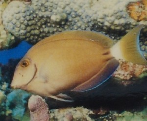 |
 pʰini फीनी N सं. a kind of fish; एक प्रकार की मछली. SD: fish, मछली.
pʰini फीनी N सं. a kind of fish; एक प्रकार की मछली. SD: fish, मछली.
pʰinil1 फीनील MORPH: pʰin-il. ADJ वि. painful; दर्दनाक. SD: attribute, विशेषता. SEE: pʰinil2 ‘twinkle’ ‘टिमटिमाना फीनीलhm:{2}’.
pʰinil2 फीनील V क्रि. twinkling of a star; तारों का टिमटिमाना. SEE: pʰinil1 ‘painful’ ‘दर्दनाक फीनीलhm:{1}’.
pʰinli1 फीन्ली N सं. firefly; जुगनू. SD: insect & invertebrate, कीट-पतंग एवं अरीढ़ जीव. SEE: pʰinli2 ‘shine’ ‘चमक फीन्लीhm:{2}’; pʰinli3 ‘throbbing’ ‘धक-धक; कंपकंपाने वाला फीन्लीhm:{3}’.
pʰinli2 फीन्ली VAR: itɸinli ईत्फीन्ली. N सं. shine; चमक. SD: attribute, विशेषता. SEE: pʰinli1 ‘firefly’ ‘जुगनू फीन्लीhm:{1}’; pʰinli3 ‘throbbing’ ‘धकधक; कंपकंपाने वाला फीन्लीhm:{3}’.
pʰinli3 फीन्ली ADJ वि. throbbing; धकधक; कंपकंपाने वाला. buco pʰinli-ie बूचो फीन्ली-ईए. There is throbbing pain in the body. शरीर में कंपकंपाने वाला दर्द हो रहा है।. SD: attribute, विशेषता. SEE: pʰinli1 ‘firefly’ ‘जुगनू फीन्लीhm:{1}’; pʰinli2 ‘shine’ ‘चमक फीन्लीhm:{2}’.
pʰinliem फीन्लीएम MORPH: pʰinli-iem. V क्रि. have throbbing pain; चपके मारकर दर्द होना.
pʰir फीर VAR: piːr पीऽर. N सं. cane; बेंत. SD: flora, फूल-पत्ती.
pʰirbɑlo फीरबालो MORPH: pʰir-bɑlo. N सं. creeper, of cane; बेंत की बेल. SD: flora, फूल-पत्ती.
pʰiriu फीरीऊ N सं. potato, boiled; उबला आलू. SD: edible item, खाद्य सामग्री.
pʰirsup फीरसूप MORPH: pʰir-sup. N सं. a kind of basket made of cane; एक प्रकार की टोकरी. SD: household, घरेलू. NT: Used to keep left over food. बेंत से बनी इस टोकरी में बचा हुआ खाना रखा जाता है।.
pʰirtɑrɑʈɔ फीरताराटौ N सं. a kind of black fish; एक प्रकार की काली मछली. SD: fish, मछली.
pirtɑːrɛycopobɑːlɔŋ पीरताऽरैयचोपोबालौङ MORPH: pirtɑːrɛycop-obɑːlɔŋ. N सं. rainbow; इंद्रधनुष. SD: natural environment, प्राकृतिक वातावरण.
 pʰirʈɔlo फीरटौलो N सं. a kind of fish; एक प्रकार की मछली. SD: fish, मछली.
pʰirʈɔlo फीरटौलो N सं. a kind of fish; एक प्रकार की मछली. SD: fish, मछली.
pʰo1 फो INTJ वि बो. no; नहीं. ʈʰu beno-pʰo ठू बेनो फो. I did not sleep. मैं नहीं सोया।. SD: grammar, व्याकरण. SEE: pʰo2 ‘strike’ ‘मारना फोhm:{2}’.
pʰo2 फो V क्रि. strike; मारना. er-pʰo-e एरफोए. Strike (it). (इसे) मारो।. SEE: pʰo1 ‘no’ ‘नहीं फोhm:{1}’.
pʰoco फोचो N सं. Tipok tree, an indigenous tree used for making canoes; टीपोक पेड़, एक स्वदेशी पेड़ जो डोंगी बनाने के काम आता है. SD: flora, फूल-पत्ती.
 pʰocoŋɔlo फोचोङऔलो MORPH: pʰo-coŋɔlo. N सं. sunshine, very intense; चिलमिलाती हुई कड़ी धूप. SD: natural environment, प्राकृतिक वातावरण. NT: Such sunshine is supposed to be so intense that the water starts boiling. इस कड़ी धूप में पानी भी उबलने लगता है।.
pʰocoŋɔlo फोचोङऔलो MORPH: pʰo-coŋɔlo. N सं. sunshine, very intense; चिलमिलाती हुई कड़ी धूप. SD: natural environment, प्राकृतिक वातावरण. NT: Such sunshine is supposed to be so intense that the water starts boiling. इस कड़ी धूप में पानी भी उबलने लगता है।.
pʰocoʈɔe फोचोटौए MORPH: pʰoco-ʈɔe. N सं. place name; islet in front of Strait Island; एक जगह का नाम; सामने वाली ठीकरी. SD: proper noun, व्यक्तिवाचक संज्ञा, natural environment, प्राकृतिक वातावरण.
pʰocoʈɔlo1 फोचोटौलो MORPH: pʰoco-ʈɔlo. DEIXIS डीक्सीस. end, of intense summer; भीषण गर्मी की समाप्ति. SD: season, मौसम. SEE: pʰocoʈɔlo2 ‘flower’ ‘फूल फोचोटौलोhm:{2}’.
pʰocoʈɔlo2 फोचोटौलो MORPH: pʰoco-ʈɔlo. N सं. a white coloured flower; सफ़ेद रंग का फूल. SD: flora, फूल-पत्ती. NT: This flower forecasts the coming of a clear sky and sunshine in the near future. इस फूल का खिलना निकट भविष्य में आनेवाले धूपहले मौसम का द्योतक है. SEE: pʰocoʈɔlo1 ‘end, of intense summer’ ‘समाप्ति, भीषण गर्मी की फोचोटौलोhm:{1}’.
pʰokle फोकले N सं. a kind of edible mushroom; एक प्रकार की खाद्य खुम्बी/ कुकुरमुत्ता. SD: flora, फूल-पत्ती. NT: Grows amongst clusters of stones. यह कुकुरमुत्ता जो पत्थरों के ढेर में उगता है।.
pʰol फोल V क्रि. love someone; किसी को प्यार करना. ʈʰɛr-pʰolkoi ठैरफोल्कोई. I love you. मैं तुमसे प्यार करता हूं।.
 |
 pʰole फोले VAR: pole पोले. N सं. lake; झील. SD: natural environment, प्राकृतिक वातावरण.
pʰole फोले VAR: pole पोले. N सं. lake; झील. SD: natural environment, प्राकृतिक वातावरण.
pʰolelinopʰɛʈ फोलेलीनोफैट MORPH: pʰole-l-ino-pʰɛʈ. N सं. logged water; इकट्ठा हुआ पानी. SD: natural environment, प्राकृतिक वातावरण.
 |
 pʰoleʈ फोलेट VAR: pʰolweʈ फोल्वेट. N सं. manta ray, a kind of fish; शंकर मछली. SD: fish, मछली.
pʰoleʈ फोलेट VAR: pʰolweʈ फोल्वेट. N सं. manta ray, a kind of fish; शंकर मछली. SD: fish, मछली.
pʰonʈɔi फोन्टौई MORPH: pʰon-ʈɔi. N सं. pipe, bones of crab’s legs used as smoking pipe; नली, केकड़े के पैर की हड्डी जो धूम्रपान की नली की तरह प्रयोग होती है. SD: cultural item, सांस्कृतिक सामग्री.
pʰoŋ1 फोङ VAR: fon फोन; foːn फोऽन; pʰon फोन; foŋ फोङ. N सं. cave; गुफा. SD: natural environment, प्राकृतिक वातावरण. SEE: pʰoŋ2 ‘crab’ ‘केकड़ा फोङhm:{2}’; pʰoŋ3 ‘mouth; hole’ ‘मुंह; गड्ढा फोङhm:{3}’.
pʰoŋ2 फोङ VAR: fon फोन; foːn फोऽन; pʰon फोन; foŋ फोङ. N सं. a kind of big edible crab; एक प्रकार का बड़ा केकड़ा जिसे खाया जाता है. SD: marine, समुद्री. SEE: pʰoŋ1 ‘cave’ ‘गुफा फोङhm:{1}’; pʰoŋ3 ‘mouth; hole’ ‘मुंह; गड्ढा फोङhm:{3}’.
 pʰoŋ3 फोङ N सं. mouth; hole; मुंह; गड्ढा. teo-tɑ-pʰoŋ तेओताफोङ. crocodile’s mouth. मगरमच्छ का मुंह. SD: body part term, शारीरिक अंग शब्दावली. SEE: pʰoŋ1 ‘cave’ ‘गुफा फोङhm:{1}’; pʰoŋ2 ‘crab’ ‘केकड़ा फोङhm:{2}’.
pʰoŋ3 फोङ N सं. mouth; hole; मुंह; गड्ढा. teo-tɑ-pʰoŋ तेओताफोङ. crocodile’s mouth. मगरमच्छ का मुंह. SD: body part term, शारीरिक अंग शब्दावली. SEE: pʰoŋ1 ‘cave’ ‘गुफा फोङhm:{1}’; pʰoŋ2 ‘crab’ ‘केकड़ा फोङhm:{2}’.
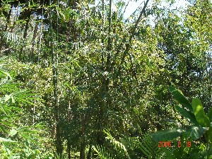 |
 por पोर VAR: pɔːr पौऽर; fɑr फार; pʰɔr फौर; ɸɔr फौर. N सं. a kind of small thin bamboo which is used for making baskets; छोटा पतला बांस जिससे टोकरी बनाई जाती है. SD: flora, फूल-पत्ती.
por पोर VAR: pɔːr पौऽर; fɑr फार; pʰɔr फौर; ɸɔr फौर. N सं. a kind of small thin bamboo which is used for making baskets; छोटा पतला बांस जिससे टोकरी बनाई जाती है. SD: flora, फूल-पत्ती.
 |
pʰoriɖileʈmoʈɑʈɑmu फोरीडीलेटमोटाटामू MORPH: pʰoriɖileʈmo-ʈɑʈɑmu. VAR: pʰorɔ-ɖileʈmo फोरौडीलेटमो. N सं. a kind of lizard with stripes; धारीदार छिपकली. SD: reptile, रेंगने वाले जंतु. NT: This lizard can be heard late at night/early hours in the morning. यह छिपकली आधी रात और पौ फटने के बीच के समय में ही आवाज़ करती है।.
pʰorle फोरले VAR: forle फोर्ले. N सं. a blood sucking flea; ख़ून चूसने वाली मक्खी. SD: insect & invertebrate, कीट-पतंग एवं अरीढ़ जीव.
pʰormu फोरमू ADJ वि. big; बड़ा. SD: attribute, विशेषता.
pʰormucɑo फोरमूचाओ MORPH: pʰor-mucɑo. N सं. dog, big; बड़ा कुत्ता. SD: animal, जानवर.
pormumyo पोरमूम्यो MORPH: pormu-myo. N सं. rock, big; बड़ी चट्टान. SD: natural environment, प्राकृतिक वातावरण.
pʰorobe फोरोबे MORPH: pʰoro-be. V क्रि. come close; मेरे पास आओ. ʈʰucuɑpʰorobe ठूचूआफोरोबे. Come close to me. मेरे पास आओ.
pʰoroɖuletmo1 फोरोडूलेत्मो MORPH: pʰoroɖu-letmo. N सं. balloon frog; एक प्रकार का गेंदनुमा मेंढक. SD: animal, जानवर. NT: This frog balls up if hit. ठोकर लगने से यह मेंढक एक गोल गेंद का रूप ले लेता है।. SEE: pʰoroɖuletmo2 ‘ladder’ ‘सीढ़ी फोरोडूलेत्मोhm:{2}’.
pʰoroɖuletmo2 फोरोडूलेत्मो N सं. ladder; सीढ़ी. SD: household, घरेलू. SEE: pʰoroɖuletmo1 ‘frog’ ‘मेंढक फोरोडूलेत्मोhm:{1}’.
 pʰorokeʈ फोरोकेट VAR: pʰɔrokɛʈ फौरोकैट; forɔːkeːʈ फोरौऽकेऽट; ɸorokeʈ फोरोकेट. N सं. heaven; स्वर्ग. SD: supernatural, अलौकिक. SEE: ŋutkɔco ‘heaven; above all of us’ ‘स्वर्ग; हम सब के ऊपर ङूतकौचो ’; pʰɔrokɛʈ ‘dream’ ‘सपना फौरोकैट ’.
pʰorokeʈ फोरोकेट VAR: pʰɔrokɛʈ फौरोकैट; forɔːkeːʈ फोरौऽकेऽट; ɸorokeʈ फोरोकेट. N सं. heaven; स्वर्ग. SD: supernatural, अलौकिक. SEE: ŋutkɔco ‘heaven; above all of us’ ‘स्वर्ग; हम सब के ऊपर ङूतकौचो ’; pʰɔrokɛʈ ‘dream’ ‘सपना फौरोकैट ’.
pʰoroːʈ फोरोऽट VAR: forɔːʈ फोरौऽट. N सं. a variety of sea worm; एक प्रकार का समुद्री कीड़ा. SD: insect & invertebrate, कीट-पतंग एवं अरीढ़ जीव, marine, समुद्री. NT: This worm was used as a trading item with the Burmese and the Japanese. प्राचीन काल में बर्मियों और जापानियों द्वारा इस कीड़े का व्यापार किया जाता था।.
pʰorɔo फोरौओ N सं. one who is a good hunter; अच्छा शिकारी. SD: people, लोग, hunting & gathering, शिकार एवं संचय सम्बंधी.
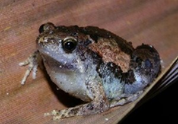 |
 pʰorube फोरूबे VAR: porube पोरूबे; pʰɔrube फौरूबे; borube बोरूबे; ɸorube फोरूबे. N सं. frog of the Andamans; अण्डमानी मेंढक. SD: animal, जानवर. NT: It becomes active in the night. The Karen community eats it. रात के समय निकलने वाले इस मेंढक को कैरन समुदाय के लोग शौक से खाते हैं।.
pʰorube फोरूबे VAR: porube पोरूबे; pʰɔrube फौरूबे; borube बोरूबे; ɸorube फोरूबे. N सं. frog of the Andamans; अण्डमानी मेंढक. SD: animal, जानवर. NT: It becomes active in the night. The Karen community eats it. रात के समय निकलने वाले इस मेंढक को कैरन समुदाय के लोग शौक से खाते हैं।.
pʰoruc फोरूच N सं. permanent big home; स्थायी बड़ा घर. SD: habitat, रहन-सहन.
 pʰotole फोतोले N सं. pig-hunting spear; सूअर का शिकार करने के लिए प्रयुक्त भाला. SD: tool, औज़ार.
pʰotole फोतोले N सं. pig-hunting spear; सूअर का शिकार करने के लिए प्रयुक्त भाला. SD: tool, औज़ार.
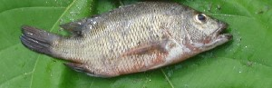 |
 pʰoʈɔm फोटौम VAR: pʰoʈoŋ फोटोङ. N सं. a kind of fish; बेदनी मछली. SD: fish, मछली.
pʰoʈɔm फोटौम VAR: pʰoʈoŋ फोटोङ. N सं. a kind of fish; बेदनी मछली. SD: fish, मछली.
-pʰo/-pʰu -फो/-फू SUF-NEG न प्र. negative; नकारात्मक प्रत्यय. ʈʰ-ico-pʰɔtmo pʰo-be ठीचोफौतमो फो बे. It is not my paddle/oar. यह मेरी पतवार नहीं है. SD: grammar, व्याकरण. NT: postverbal. उपसर्ग।.
pʰɔrcɛɔ फौरचैऔ MORPH: pʰɔr-cɛɔ. N सं. a small instrument to cut fish; छोटा दाओ जो मछली काटने के लिए प्रयोग में आता है. SD: tool, औज़ार. SEE: ceo ‘knife’ ‘चाकू चेओ ’.
pʰɔrle फौरले N सं. big fly found in creeks; बड़ी मक्खी जो खाड़ी में पाई जाती है. SD: insect & invertebrate, कीट-पतंग एवं अरीढ़ जीव.
pʰɔrokɛt1 फौरोकैत N सं. hell; नरक. SD: mythology, पौराणिक. SEE: pʰɔrokɛt2 ‘huge’ ‘विशाल फौरोकैतhm:{2}’.
pʰɔrokɛt2 फौरोकैत ADJ वि. huge; विशाल. SD: attribute, विशेषता. SEE: pʰɔrokɛt1 ‘hell’ ‘नरक फौरोकैतhm:{1}’.
pʰɔrokɛʈ फौरोकैट N सं. dream; सपना. SD: life, जीवन. SEE: pʰorokeʈ ‘heaven’ ‘स्वर्ग फोरोकेट ’.
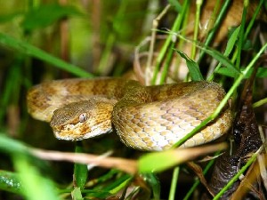 |
 pʰɔrošubi फौरोशूबी MORPH: pʰɔro-šubi. VAR: pʰɑrošubi फारोशूबी. N सं. poisonous snake; जहरीला सांप. SD: reptile, रेंगने वाले जंतु.
pʰɔrošubi फौरोशूबी MORPH: pʰɔro-šubi. VAR: pʰɑrošubi फारोशूबी. N सं. poisonous snake; जहरीला सांप. SD: reptile, रेंगने वाले जंतु.
pʰɔroʈ फौरोट N सं. sea cucumber; पानी या समुद्री खीरा. SD: marine, समुद्री, edible item, खाद्य सामग्री.
pʰɔrɔk फौरौक Etym: Bo; बो. ADJ वि. big; बड़ा. SD: attribute, विशेषता.
pʰɔrɔtimikʰu फौरौतीमीखू MORPH: pʰɔrɔ-timikʰu. N सं. Diglipur, indigenous name of Diglipur; दीगलीपुर, एक जगह का नाम. SD: proper noun, व्यक्तिवाचक संज्ञा. NT: Literal meaning: forest of bamboo. Boro Sr used to live in Diglipur. शाब्दिक अर्थः ‘बांस का जंगल’। बोरो सीनियर यहीं रहती थीं।.
pʰɔrɔto1 फौरौतो MORPH: pʰɔrɔ-to. VAR: poro-to पोरोतो. Etym: North Andaman; उत्तरी अण्डमान. N सं. a sweet fruit; एक प्रकार का मीठा फल. SD: edible fruit, खाद्य फल. NT: Only the inner part of the fruit is eaten. इस फल का गूदा खाया जाता है।. SEE: pʰɔrɔto2 ‘tree’ ‘पेड़ फौरौतोhm:{2}’.
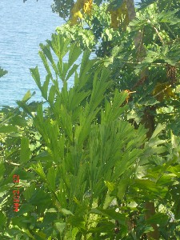 |
pʰɔrɔto2 फौरौतो VAR: pɔrɔto पौरौतौ. Etym: Jeru; जेरू. N सं. Caryota palm tree; चारयोता ताड़ का पेड़. SD: flora, फूल-पत्ती. NT: The flowers are used for decoration. The sprouts of this tree are edible. इस पेड़ के फूल सजाने के काम आते हैं। इस पेड़ के अंकुर खाए जाते हैं।. SEE: pʰɔrɔto1 ‘fruit’ ‘फल फौरौतोhm:{1}’.
pʰɔrterpʰir फौरतेरफीर MORPH: pʰɔr-ter-pʰir. N सं. knife made of bamboo; बांस का चाकू. SD: tool, औज़ार, household, घरेलू.
pɔtɛʈ पौतैट N सं. a kind of fish; एक प्रकार की शंकर मछली. SD: fish, मछली.
 pɔtole पौतोले VAR: pʰɔʈole फौटोले. N सं. bamboo used for hunting pigs; बांस जिससे सूअर का शिकार किया जाता है. SD: flora, फूल-पत्ती, tool, औज़ार.
pɔtole पौतोले VAR: pʰɔʈole फौटोले. N सं. bamboo used for hunting pigs; बांस जिससे सूअर का शिकार किया जाता है. SD: flora, फूल-पत्ती, tool, औज़ार.
pʰɔʈcɛɔ फौटचैऔ MORPH: pʰɔʈ-cɛɔ. N सं. knife; चाकू. SD: tool, औज़ार.
pʰɔʈlɑcɑ फौटलाचा MORPH: pʰɔʈ-lɑcɑ. N सं. a kind of big tern; एक प्रकार का समुद्री पक्षी. SD: bird, पक्षी. NT: Brown Noddy, Black Noddy.
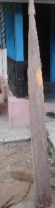 |
pʰɔʈmo फौटमो VAR: pʰoʈmo फोटमो; pʰɔtmo फौतमो. N सं. paddle; rudder; oar used for rowing; पतवार; पैडल; आलिश. ʈʰ-ico-pʰɔtmo ठीचोफौतमो. my paddle/oar. मेरी पतवार. SD: boat related, नाव सम्बंधी. NT: In Andamanese Hindi it is called ‘Alish’. अण्डमानी हिन्दी में इसे ‘आलिश’ कहते हैं।.
pɔwɑ पौवा N सं. leftovers; जूठन. SD: waste product, कूड़ा-कचरा.
pʰu फू VAR: fuː फूऽ; pʰuː फूऽ. N सं. cow dung; stool; गोबर; मल. SD: waste product, कूड़ा-कचरा.
pʰudo फूदो N सं. leaves used to make cottage or broom; झोंपड़ी या झाड़ू बनाने के प्रयोग में आने वाला पत्ता. SD: flora, फूल-पत्ती.
pujjukɑr पुज्जूकर N सं. Puchikwar people; पुज्जूकर लोग. SD: people, लोग.
 |
pʰulɛmu फूलैमू VAR: fulimu फूलीमू; ɸulimo फूलीमो. N सं. a kind of fly; एक प्रकार की मक्खी. Musca domestica. SD: insect & invertebrate, कीट-पतंग एवं अरीढ़ जीव. NT: Its eggs are hatched by ‘phulimucerel’ Calliphora. इस मक्खी के अण्डे कोई दूसरी मक्खी सेती है।.
 |
pʰulɛmu ɔrɔtle फूलैमू औरौत्ले MORPH: pʰulɛmu ɔrɔt-le. N सं. a kind of big fly; एक प्रकार की बड़ी मक्खी. Tabanus. SD: insect & invertebrate, कीट-पतंग एवं अरीढ़ जीव.
 pʰulimu फूलीमू VAR: ɸulimo फूलीमो. N सं. housefly; a big sized wasp; घरेलू मक्खी; बड़ा ततैया. SD: insect & invertebrate, कीट-पतंग एवं अरीढ़ जीव.
pʰulimu फूलीमू VAR: ɸulimo फूलीमो. N सं. housefly; a big sized wasp; घरेलू मक्खी; बड़ा ततैया. SD: insect & invertebrate, कीट-पतंग एवं अरीढ़ जीव.
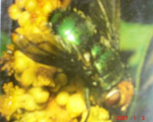 |
pʰulimucɛrel फूलीमूचैरेल MORPH: pʰulimu-cɛrel. VAR: pʰulɛmu-cɛrel फूलैमूचैरेल. N सं. a kind of green fly; एक प्रकार की हरी मक्खी. Calliphora. SD: insect & invertebrate, कीट-पतंग एवं अरीढ़ जीव. NT: It hatches the eggs laid by ‘phulemu’ Musca domestica. यह मक्खी घरेलू मक्खी के अण्डे भी सेती है।.
puliu पूलीऊ Etym: Jeru; जेरू. VAR: bɑlyɑ बाल्या. Etym: Bea; बेया. N सं. a kind of flower; एक प्रकार का फूल. SD: flora, फूल-पत्ती. NT: Blooming of this flower signals the end of winter. It blooms between mid-February and mid-May. इस फूल का खिलना सर्दियों के मौसम का ख़त्म होने का सूचक है। यह फूल मध्य फरवरी से मध्य मई तक खिलता है।.
pʰuluŋi फूलूङी N सं. wound; फोड़ा; फुंसी. SD: illness, रोग.
pʰune फूने N सं. yellow juice which comes out of honey; पीला रस जो शहद में से निकलता है. SD: edible item, खाद्य सामग्री.
pʰuŋ फूङ ADJ वि. ripe; पका. kɔpʰo-pʰuŋ कौफो फूङ. ripe banana. पका हुआ केला. SD: attribute, विशेषता.
pʰur फूर VAR: puːr पूऽर. V क्रि. clap; pat on thigh; ताली बजाना; जांघ पर ताली बजाना.
N सं. sound made by clapping hand on thigh; जांघ पर ताली मारने की आवाज़. u-pʰur-b-ɔm ऊफूरबौम. He claps. वह ताली बजाता है।.
purjo पूरजो V क्रि. swinging up and down; see-saw; ऊपर-नीचे झूला झूलना.
pʰurleb फूरलेब V क्रि. clean; साफ़ करना.
puroː पूरोऽ N सं. whetstone; धार बनाने वाला पत्थर. SD: tool, औज़ार, hunting & gathering, शिकार एवं संचय सम्बंधी.
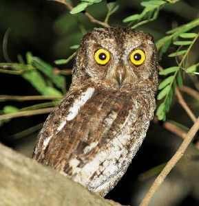 |
 pʰuro फूरो VAR: pʰuːro फूऽरो; furoː फूरोऽ. N सं. a kind of owl; एक प्रकार का उल्लू. SD: bird, पक्षी. NT: Endemic to the Andaman and Nicobar Islands, it is found commonly in mangrove swamps, creeks and lagoons. It perches on tall trees in fields and forest clearings, and hunts for insects at dusk. It is also termed a rogue as it is supposed to bring misfortune and misery. अण्डमान और निकोबार द्वीप समूह का विशेष पक्षी जो खाड़ी, दलदल और लैगून में पाया जाता है। अक्सर खेतों में उगे हुए ऊंचे पेड़ों पर घर बनाता है। सूर्यास्त के समय नाना प्रकार के कीड़ों को खाता है। अण्डमानी इसे ‘बदमाश’ कहते हैं क्योंकि इसका दिखना दुख और विपदादायी माना जाता है।.
pʰuro फूरो VAR: pʰuːro फूऽरो; furoː फूरोऽ. N सं. a kind of owl; एक प्रकार का उल्लू. SD: bird, पक्षी. NT: Endemic to the Andaman and Nicobar Islands, it is found commonly in mangrove swamps, creeks and lagoons. It perches on tall trees in fields and forest clearings, and hunts for insects at dusk. It is also termed a rogue as it is supposed to bring misfortune and misery. अण्डमान और निकोबार द्वीप समूह का विशेष पक्षी जो खाड़ी, दलदल और लैगून में पाया जाता है। अक्सर खेतों में उगे हुए ऊंचे पेड़ों पर घर बनाता है। सूर्यास्त के समय नाना प्रकार के कीड़ों को खाता है। अण्डमानी इसे ‘बदमाश’ कहते हैं क्योंकि इसका दिखना दुख और विपदादायी माना जाता है।.
 pʰuroterkʰuro फूरोतेरखूरो MORPH: pʰuro-ter-kʰuro. N सं. owl, big; बड़ा उल्लू. SD: bird, पक्षी.
pʰuroterkʰuro फूरोतेरखूरो MORPH: pʰuro-ter-kʰuro. N सं. owl, big; बड़ा उल्लू. SD: bird, पक्षी.
puroʈoi पूरोटोई Etym: Bo; बो. ADV क्रि वि. ancient times; पुराना ज़माना. SD: time, समय.
pʰuru फूरू N सं. blouse; चोली. SD: costume & adornment, आभूषण एवं श्रृंगार.